<!DOCTYPE html>
<html lang="zh">
  <head>
    <meta charset="utf-8">
    <meta http-equiv="X-UA-Compatible" content="IE=edge">
    <meta name="viewport" content="width=device-width, initial-scale=1">
    <title>
      
    四、JVM自动内存管理--虚拟机性能监控，故障处理工具 - 大爷来玩儿啊~
    
    </title>
    <link rel="shortcut icon" href="media/15865826719099/icon.png" type="image/png" />

    
    
    <link href="atom.xml" rel="alternate" title="大爷来玩儿啊~" type="application/atom+xml">
    <link rel="stylesheet" href="asset/css/style.min.css">
    <link rel="stylesheet" href="asset/css/doc.css">
    <script src="asset/app.js"></script>
</head>
  <body>
    <section class="hero">
      <div class="hero-head">
          <nav class="navbar" role="navigation" aria-label="main navigation">
              <div class="container">
              <div class="navbar-brand">
                
                <a target="_self" class="navbar-item " href="index.html">博客</a>
                
                <a target="_self" class="navbar-item " href="archives.html">归档</a>
                

                <a role="button" id="navbarSNSRssSwitchBtn" class="navbar-burger burger" aria-label="menu" aria-expanded="false" data-target="navbarSNSRssButtons">
                  <span aria-hidden="true"></span>
                  <span aria-hidden="true"></span>
                  <span aria-hidden="true"></span>
                </a>
              </div>
            
              <div id="navbarSNSRssButtons" class="navbar-menu">
                <div class="navbar-start">
                  
                </div>
            
                <div class="navbar-end">
                  <div class="navbar-item">
                    <!--buttons start-->
                    <div class="buttons">
                      
                        
                        
                        
                        
                      
                      <a href="atom.xml" target="_blank" title="RSS">
                          <span class="icon is-large has-text-black-bis">
                              <svg class="svg-inline--fa fa-rss fa-w-14 fa-lg" aria-hidden="true" focusable="false" data-prefix="fas" data-icon="rss" role="img" xmlns="http://www.w3.org/2000/svg" viewBox="0 0 448 512" data-fa-i2svg=""><path fill="currentColor" d="M128.081 415.959c0 35.369-28.672 64.041-64.041 64.041S0 451.328 0 415.959s28.672-64.041 64.041-64.041 64.04 28.673 64.04 64.041zm175.66 47.25c-8.354-154.6-132.185-278.587-286.95-286.95C7.656 175.765 0 183.105 0 192.253v48.069c0 8.415 6.49 15.472 14.887 16.018 111.832 7.284 201.473 96.702 208.772 208.772.547 8.397 7.604 14.887 16.018 14.887h48.069c9.149.001 16.489-7.655 15.995-16.79zm144.249.288C439.596 229.677 251.465 40.445 16.503 32.01 7.473 31.686 0 38.981 0 48.016v48.068c0 8.625 6.835 15.645 15.453 15.999 191.179 7.839 344.627 161.316 352.465 352.465.353 8.618 7.373 15.453 15.999 15.453h48.068c9.034-.001 16.329-7.474 16.005-16.504z"></path></svg><!-- <i class="fas fa-rss fa-lg"></i> -->
                          </span>
                      </a>
                    </div>
                    <!--buttons end-->

                  </div>
                </div>
                </div>
              </div>
            </nav>
      </div>

 <div class="hero-body ct-body"></div>
      
    </section>
    <section class="ct-body">
      <div class="container">
          <div class="columns is-variable bd-klmn-columns is-4 is-centered">
              <div class="column is-four-fifths">
                  <div class="post-body single-content">
                    
                    <h1 class="title">
                            四、JVM自动内存管理--虚拟机性能监控，故障处理工具   
                      </h1>
                     
                    
                      <div class="media">
                            
                            <figure class="media-left">
                              <p class="image is-48x48">
                                
                                  
                                
                              </p>
                            </figure>
                            
                            <div class="media-content">
                              <div class="content">
                                <p>
                                 <span class="date">2019/12/26</span>
                                  <span class="tran-posted-in">posted in</span>&nbsp; 
                                  
                                      <span class="posted-in"><a href='JVM%E6%B7%B1%E5%85%A5%E7%90%86%E8%A7%A3.html'>JVM深入理解</a></span>
                                         
                                  

                                   
                                      
                                  <br />
                                  <span class="tran-tags">Tags:</span>&nbsp;
                                  
                                    <a class="tag is-link is-light" href='tag_jvm.html'>#jvm</a>
                                     

                                </p>
                              </div>
                            </div>
                         
                    </div>
                </div>
                  <article class="markdown-body single-content">
                    <h2 id="toc_0">jvm参数一览</h2>

<table>
<thead>
<tr>
<th>参数</th>
<th>含义</th>
</tr>
</thead>

<tbody>
<tr>
<td>-XX:+PrintVMOptions</td>
<td>打印虚拟机接受到的命令行显式参数</td>
</tr>
<tr>
<td>-XX:+PrintCommandLineFlags</td>
<td>打印虚拟机接受到的命令行显式参数</td>
</tr>
<tr>
<td>-XX:+PrintFlagsFinal</td>
<td>打印所有系统参数</td>
</tr>
</tbody>
</table>

<h3 id="toc_1">生产服务器推荐开启</h3>

<p>-XX:-HeapDumpOnOutOfMemoryError 默认关闭，建议开启，在 java.lang.OutOfMemoryError 异常出现时，输出一个 dump 文件，记录当时的堆内存快照。<br/>
-XX:HeapDumpPath=./java_pid<pid>.hprof 用来设置堆内存快照的存储文件路径，默认是 java 进程启动位置。</p>

<h3 id="toc_2">jvm堆配置参数</h3>

<table>
<thead>
<tr>
<th>参数</th>
<th>含义</th>
</tr>
</thead>

<tbody>
<tr>
<td>-Xms</td>
<td>初始堆大小</td>
</tr>
<tr>
<td>-Xmx</td>
<td>最大堆空间</td>
</tr>
<tr>
<td>-Xmn</td>
<td>设置新生代大小</td>
</tr>
<tr>
<td>-XX:SurvivorRatio</td>
<td>设置新生代eden空间和from/to空间的比例关系</td>
</tr>
<tr>
<td>-XX:PermSize</td>
<td>方法区初始大小</td>
</tr>
<tr>
<td>-XX:MaxPermSize</td>
<td>方法区最大大小</td>
</tr>
<tr>
<td>-XX:MetaspaceSize</td>
<td>元空间GC阈值（JDK1.8）</td>
</tr>
<tr>
<td>-XX:MaxMetaspaceSize</td>
<td>最大元空间大小（JDK1.8）</td>
</tr>
<tr>
<td>-Xss</td>
<td>栈大小</td>
</tr>
<tr>
<td>-XX:MaxDirectMemorySize</td>
<td>直接内存大小，默认为最大堆空间</td>
</tr>
</tbody>
</table>

<h3 id="toc_3">jvm 追踪类信息</h3>

<table>
<thead>
<tr>
<th>参数</th>
<th>含义</th>
</tr>
</thead>

<tbody>
<tr>
<td>-verbose:class</td>
<td>跟踪类的加载和卸载</td>
</tr>
<tr>
<td>-XX:+TraceClassLoading</td>
<td>跟踪类的加载</td>
</tr>
<tr>
<td>-XX:+TraceClassUnloading</td>
<td>跟踪类的卸载</td>
</tr>
<tr>
<td>-XX:+PrintClassHistogram</td>
<td>表示遇到 Ctrl-Break 后打印类实例的柱状信息，与 jmap -histo 功能相同。</td>
</tr>
</tbody>
</table>

<h3 id="toc_4">jvm gc日志配置参数</h3>

<table>
<thead>
<tr>
<th>参数</th>
<th>含义</th>
</tr>
</thead>

<tbody>
<tr>
<td>-XX:PrintGC</td>
<td>打印gc日志</td>
</tr>
<tr>
<td>-Xlogger:logpath</td>
<td>设置 gc 的日志路，如: -Xlogger:log/gc.log</td>
</tr>
<tr>
<td>-XX:+PrintGCDetails</td>
<td>打印详细gc日志</td>
</tr>
<tr>
<td>-XX:+PrintHeapAtGC</td>
<td>GC前后打印堆信息</td>
</tr>
<tr>
<td>-XX:+PrintGCTimeStamps</td>
<td>打印GC发生的时间</td>
</tr>
<tr>
<td>-XX:+PrintGCApplicationConcurrentTime</td>
<td>打印应用程序的执行时间</td>
</tr>
<tr>
<td>-XX:+PrintGCApplicationStoppedTime</td>
<td>打印应用由于GC而产生的停顿时间</td>
</tr>
<tr>
<td>-Xloggc</td>
<td>保存gc日志，-Xloggc:gc.log</td>
</tr>
<tr>
<td>verbose:gc</td>
<td>显式gc事件</td>
</tr>
</tbody>
</table>

<h2 id="toc_5">jps （虚拟机进程状况工具）</h2>

<p>列出当前机器上正在运行的虚拟机进程，并显示虚拟机执行主类名称与虚拟机的唯一进程ID，jps 从操作系统的临时目录上去找(所以有一些信息可能显示不全)。</p>

<p>-q :仅仅显示进程，<br/>
-m:输出主函数传入的参数. 下的 hello 就是在执行程序时从命令行输入的参数 -l: 输出应用程序主类完整 package 名称或 jar 完整名称.<br/>
-v: 列出 jvm 参数, -Xms20m -Xmx50m 是启动程序指定的 jvm 参数</p>

<pre><code class="language-text">➜  ~ jps
1249 org.jetbrains.idea.maven.server.RemoteMavenServer36
4468 org.jetbrains.jps.cmdline.Launcher
1208
4490 sun.tools.jps.Jps
</code></pre>

<h2 id="toc_6">jstat（虚拟机统计信息监视工具）</h2>

<p>jstat（JVM Statistics Monitoring Tool）是用于监视虚拟机各种运行状态信息的命令行工具。它可以显示本地或者远程虚拟机进程中的类加载、内存、垃圾收集、即时编译等运行时数据。</p>

<p>jstat [ option vmid [interval[s|ms] [count]] ]</p>

<p>option主要分为三类：类加载、垃圾收集、运行期编译状况。<br/>
interval和count代表查询间隔和次数,例如间隔250毫秒查看运行状态10次，</p>

<p><figure>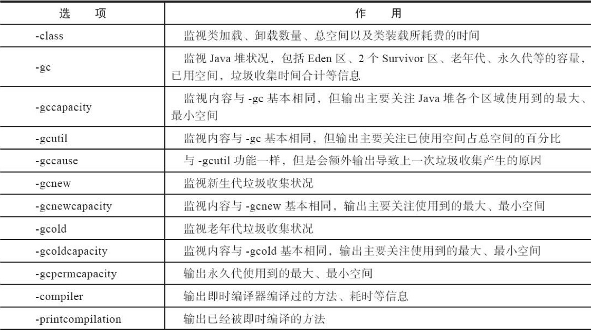</figure></p>

<pre><code class="language-shell">&gt; jstat -gc 4468 250 10
S0C    S1C    S0U    S1U      EC       EU        OC         OU       MC     MU    CCSC   CCSU   YGC     YGCT    FGC    FGCT     GCT
10752.0 10752.0  0.0   4205.5 65536.0  27588.7   175104.0    144.0    16256.0 15720.1 1920.0 1802.4      1    0.004   0      0.000    0.004
10752.0 10752.0  0.0   4205.5 65536.0  27588.7   175104.0    144.0    16256.0 15720.1 1920.0 1802.4      1    0.004   0      0.000    0.004
10752.0 10752.0  0.0   4205.5 65536.0  27588.7   175104.0    144.0    16256.0 15720.1 1920.0 1802.4      1    0.004   0      0.000    0.004
10752.0 10752.0  0.0   4205.5 65536.0  27588.7   175104.0    144.0    16256.0 15720.1 1920.0 1802.4      1    0.004   0      0.000    0.004
10752.0 10752.0  0.0   4205.5 65536.0  27588.7   175104.0    144.0    16256.0 15720.1 1920.0 1802.4      1    0.004   0      0.000    0.004
10752.0 10752.0  0.0   4205.5 65536.0  27588.7   175104.0    144.0    16256.0 15720.1 1920.0 1802.4      1    0.004   0      0.000    0.004
10752.0 10752.0  0.0   4205.5 65536.0  27588.7   175104.0    144.0    16256.0 15720.1 1920.0 1802.4      1    0.004   0      0.000    0.004
10752.0 10752.0  0.0   4205.5 65536.0  27588.7   175104.0    144.0    16256.0 15720.1 1920.0 1802.4      1    0.004   0      0.000    0.004
10752.0 10752.0  0.0   4205.5 65536.0  27588.7   175104.0    144.0    16256.0 15720.1 1920.0 1802.4      1    0.004   0      0.000    0.004
10752.0 10752.0  0.0   4205.5 65536.0  27588.7   175104.0    144.0    16256.0 15720.1 1920.0 1802.4      1    0.004   0      0.000    0.004
</code></pre>

<p>S0C:第一个幸存区(From 区)的大小 S1C:第二个幸存区(To 区)的大小 S0U:第一个幸存区的使用大小 S1U:第二个幸存区的使用大小 EC:伊甸园(Eden)区的大小 EU:伊甸园(Eden)区的使用大小 OC:老年代大小 OU:老年代使用大小 MC:方法区大小 MU:方法区使用大小 CCSC:压缩类空间大小 CCSU:压缩类空间使用大小 YGC:年轻代垃圾回收次数 YGCT:年轻代垃圾回收消耗时间 FGC:老年代垃圾回收次数 FGCT:老年代垃圾回收消耗时间 GCT:垃圾回收消耗总时间</p>

<h2 id="toc_7">jinfo：Java配置信息工具</h2>

<p>jinfo（Configuration Info for Java）的作用是实时查看和调整虚拟机各项参数。jinfo还可以使用-sysprops选项把虚拟机进程的System.getProperties()的内容打印出来</p>

<p>jinfo -sysprops VID 把虚拟机进程的System.getProperties()的内容打印出来<br/>
java -XX:+PrintFlagsFinal -version  查看所有高级参数的当前情况</p>

<p>在运行期修改部分参数值（可以使用-flag[+|-]name或者-flag name=value在运行期修改一部分运行期可写的虚拟机参数值）。</p>

<p>jinfo -flags PrintGC 7825 查看PrintGC 是否开启<br/>
jinfo -flags +PrintGC 7825 开启PrintGC</p>

<h3 id="toc_8">VM 参数分类</h3>

<p><a href="https://docs.oracle.com/javase/8/docs/technotes/tools/unix/java.html">JVM 的命令行参数参考</a></p>

<p><a href="https://www.oracle.com/java/technologies/javase/vmoptions-jsp.html">HotSpot VM Options参数选项</a></p>

<h4 id="toc_9">堆配置</h4>

<p>我们使用 -Xms 设置堆的初始空间大小，使用 -Xmx 设置堆的最大空间大小</p>

<pre><code class="language-shell"># 在上面的命令中，我们设置 JVM 的初始堆大小为 20M，最大堆空间为 30M。
&gt; java -Xms20m -Xmx30m Demo
</code></pre>

<p>在 JDK1.8 中，堆分为年轻代和老年代。</p>

<p>JVM 提供了参数 -Xmn 来设置年轻代内存的大小，但没有提供参数设置老年代的大小。但其实老年代的大小就等于堆大小减去年轻代大小。</p>

<pre><code class="language-shell">#设置 JVM 堆初始大小为20M。其中年轻代的大小为 10M，那么剩下的就是老年代的大小，有 10M了。
&gt; java -Xms20m -Xmn10M Demo
</code></pre>

<h5 id="toc_10">Eden区</h5>

<p>在年轻代中，分为三个区域，分别是：eden 空间、from 空间、to 空间。如果要设置这部分的大小，那么就使用 -XX:SurvivorRatio 这个参数，该参数设置 eden / from 空间的比例关系，该参数的公式如下：</p>

<pre><code class="language-text">-XX:SurvivorRatio = eden/from = eden/to
</code></pre>

<p>例如我们的年轻代有 10 M，而我们设置 -XX:SurvivorRatio 参数为 2。也就是说 eden/from = eden/to = 2。</p>

<p>这里教一个快速计算的方法，我们假设 eden = 2，那么 from = 1，to = 1，那么 eden + from + to = 10M。这样就可以算出每一份大小是 10/4 = 2.5M。所以 Eden 区 = 2.5 * 2 = 5M，from 区是 2.5M，to 区是 2.5M。</p>

<h5 id="toc_11">永久代/元空间</h5>

<p>在 JDK 1.8 之前，所加载的类信息都放在永久代中。我们用 -XX:PermSize 设置永久代初始大小，用 -XX:MaxPermSize 设置永久代最大大小。</p>

<pre><code class="language-text">&gt; java -XX:PermSize10m -XX:MaxPermSize50m -XX:+PrintGCDetails Demo
</code></pre>

<p>但在 JDK1.8 之时，永久代被移除，取而代之的是元空间（Metaspace）。在元空间这块内存中，有两个参数很相似，它们是： -XX:MetaspaceSize 和 -XX:MaxMetaspaceSize。</p>

<pre><code class="language-shell">&gt; java -XX:MetaspaceSize=10m -XX:MaxMetaspaceSize=50m -XX:+PrintGCDetails Demo
</code></pre>

<h5 id="toc_12">栈空间</h5>

<p>栈空间是每个线程各自有的一块区域，如果栈空间太小，也会导致 StackOverFlow 异常。而要设置栈空间大小，只需要使用 -Xss 参数就可以。</p>

<pre><code class="language-shell"># 设置最大栈空间为 2M
&gt; java -Xss2m Demo
</code></pre>

<h5 id="toc_13">直接内存</h5>

<p>在 JVM 中还有一块内存，它独立于 JVM 的堆内存，它就是：直接内存。我们可以使用 -XX:MaxDirectMemorySize 设置最大直接内存。如果不设置，默认为最大堆空间，即 -Xmx。</p>

<pre><code class="language-shell">&gt; java -XX:MaxDirectMemorySize=50m Demo
</code></pre>

<h2 id="toc_14">jmap：Java内存映像工具</h2>

<p><figure>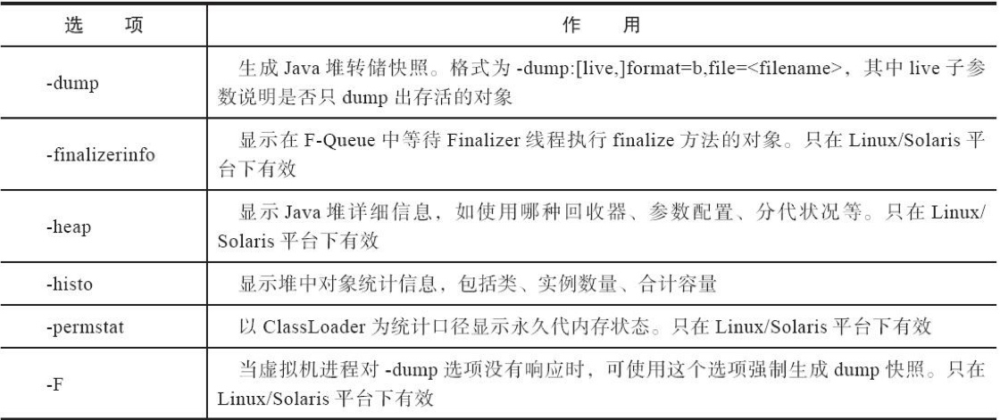</figure></p>

<pre><code class="language-shell">➜  ~ jmap -heap 20488
Attaching to process ID 20488, please wait...
Debugger attached successfully.
Server compiler detected.
JVM version is 25.121-b13

using thread-local object allocation.
Parallel GC with 10 thread(s)

#堆配置情况，也就是 JVM 参数配置的结果[平常说的 tomcat 配置 JVM 参数，就是在配置这些]
Heap Configuration:  
   #最小堆使用比例
   MinHeapFreeRatio         = 0 
   #最大堆可用比例
   MaxHeapFreeRatio         = 100
   #最大堆空间大小
   MaxHeapSize              = 4294967296 (4096.0MB)
   #新生代分配大小
   NewSize                  = 89128960 (85.0MB)
   #最大可新生代分配大小
   MaxNewSize               = 1431306240 (1365.0MB)
   #老年代大小
   OldSize                  = 179306496 (171.0MB)
   #新生代比例
   NewRatio                 = 2
   #新生代与 suvivor 的比例
   SurvivorRatio            = 8
   #MetaspaceSize 元数据区大小
   MetaspaceSize            = 21807104 (20.796875MB)
   # 压缩类空间大小
   CompressedClassSpaceSize = 1073741824 (1024.0MB)
   # 最大可分配元数据区大小
   MaxMetaspaceSize         = 17592186044415 MB
   G1HeapRegionSize         = 0 (0.0MB)
#堆使用情况【堆内存实际的使用情况】
Heap Usage:
# 新生代
PS Young Generation 
# 伊甸区
Eden Space:
   # 伊甸区容量
   capacity = 67108864 (64.0MB)
   # 伊甸区已使用
   used     = 8067512 (7.693778991699219MB)
   # 伊甸区当前剩余
   free     = 59041352 (56.30622100830078MB)
   ## 伊甸区使用情况
   12.02152967453003% used
# s1 区
From Space:
   capacity = 11010048 (10.5MB)
   used     = 0 (0.0MB)
   free     = 11010048 (10.5MB)
   0.0% used
# s2 区
To Space:
   capacity = 11010048 (10.5MB)
   used     = 0 (0.0MB)
   free     = 11010048 (10.5MB)
   0.0% used
# 老年代使用情况
PS Old Generation
   capacity = 179306496 (171.0MB)
   used     = 0 (0.0MB)
   free     = 179306496 (171.0MB)
   0.0% used

2295 interned Strings occupying 161832 bytes.
</code></pre>

<p>jmap –histo <pid><br/>
jmap –histo:live <pid> 如果 live 子参数加上后,只统计活的对象数量</p>

<p>jmap -histo 20488  按照数量排名对象<br/>
jmap -histo:live 20488  按照数量排名存活的对象<br/>
jmap -histo:live  20488 | head -10 前十行</p>

<pre><code class="language-text">➜  ~ jmap -histo 20488

 num     #instances         #bytes  class name
----------------------------------------------
   1:           711        5225088  [I
   2:          2151        1535568  [B
   3:          6572         796664  [C
   4:          5022         120528  java.lang.String
   5:           727          82720  java.lang.Class
   6:          1328          60912  [Ljava.lang.Object;
   7:           661          26440  java.util.LinkedHashMap$Entry
   8:           326          16624  [Ljava.lang.String;
   9:           391          12512  java.util.HashMap$Node
  10:            43          12432  [Ljava.util.HashMap$Node;
  11:           152          10944  java.lang.reflect.Field
  12:           328          10496  java.io.File
  13:           405           9720  java.lang.StringBuilder
  14:           138           8832  java.net.URL
  15:           266           8512  java.util.Hashtable$Entry
  16:           135           5400  java.lang.ref.Finalizer
  17:           120           4800  java.lang.ref.SoftReference
  18:           179           4296  java.lang.StringBuffer
  19:            31           4224  [Ljava.util.Hashtable$Entry;
  20:           258           4128  java.lang.Integer
</code></pre>

<h2 id="toc_15">jhat: 虚拟机对转储快照分析工具</h2>

<p>JDK提供jhat（JVM Heap Analysis Tool）命令与jmap搭配使用，来分析jmap生成的堆转储快照。jhat内置了一个微型的HTTP/Web服务器，生成堆转储快照的分析结果后，可以在浏览器中查看。但是尽量不要在实际工作中使用这个命令工具，因为这个命令比较简陋，也因为分析工作一般都不会再服务器上进行，把jmap dump下来的文件转储到其它机器上可以使用更加友好的工具进行分析。</p>

<h2 id="toc_16">jstack：Java堆栈跟踪工具</h2>

<p>jstack（Stack Trace for Java）命令用于生成虚拟机当前时刻的线程快照（一般称为threaddump或者javacore文件）。</p>

<p>线程快照就是当前虚拟机内每一条线程正在执行的方法堆栈的集合，生成线程快照的目的通常是定位线程出现长时间停顿的原因，如线程间死锁、死循环、请求外部资源导致的长时间挂起等，都是导致线程长时间停顿的常见原因。</p>

<p>一般来说 jstack 主要是用来排查是否有死锁的情况，</p>

<p>线程出现停顿时通过jstack来查看各个线程的调用堆栈，就可以获知没有响应的线程到底在后台做些什么事情，或者等待着什么资源。</p>

<p><figure>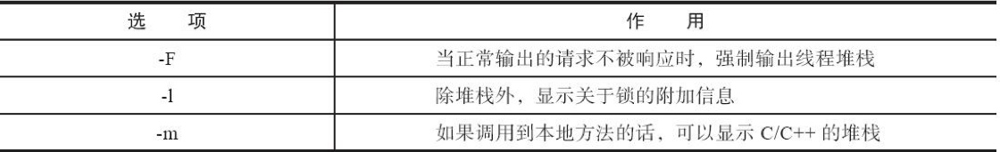</figure></p>

<pre><code class="language-java">public class SynchronizedObjDeadLock {
    public static void main(String[] args) {
        new SynchronizedObjDeadLock().deadLock();
    }
    private static final Object objectA = new Object();
    private static final Object objectB = new Object();

    private void deadLock() {

        new Thread(()-&gt;{
            synchronized (objectA) {
                try {
                    Thread.sleep(1000);
                } catch (InterruptedException e) {
                    e.printStackTrace();
                }
                System.out.println(&quot;dA&quot;);
                synchronized (objectB) {
                    System.out.println(&quot;dB&quot;);
                }
            }
        }).start();

        new Thread(()-&gt;{
            synchronized (objectB) {
                try {
                    Thread.sleep(1000);
                } catch (InterruptedException e) {
                    e.printStackTrace();
                }
                System.out.println(&quot;B&quot;);
                synchronized (objectA) {
                    System.out.println(&quot;A&quot;);
                }
            }
        }).start();

    }
}
</code></pre>

<pre><code class="language-shell">&gt; jstack -l 29087
Full thread dump Java HotSpot(TM) 64-Bit Server VM (25.121-b13 mixed mode):

&quot;Attach Listener&quot; #14 daemon prio=9 os_prio=31 tid=0x00007ffc040f0000 nid=0x5a03 waiting on condition [0x0000000000000000]
   java.lang.Thread.State: RUNNABLE

   Locked ownable synchronizers:
    - None

&quot;DestroyJavaVM&quot; #13 prio=5 os_prio=31 tid=0x00007ffbfe8cf800 nid=0xe03 waiting on condition [0x0000000000000000]
   java.lang.Thread.State: RUNNABLE

   Locked ownable synchronizers:
    - None

&quot;Thread-1&quot; #12 prio=5 os_prio=31 tid=0x00007ffbfe8cf000 nid=0xa603 waiting for monitor entry [0x000070000736b000]
   java.lang.Thread.State: BLOCKED (on object monitor)
    at com.goddess.base.concurrent.SynchronizedObjDeadLock.lambda$deadLock$1(SynchronizedObjDeadLock.java:41)
    - waiting to lock &lt;0x000000076ac8e828&gt; (a java.lang.Object)
    - locked &lt;0x000000076ac8e838&gt; (a java.lang.Object)
    at com.goddess.base.concurrent.SynchronizedObjDeadLock$$Lambda$2/1349393271.run(Unknown Source)
    at java.lang.Thread.run(Thread.java:745)

   Locked ownable synchronizers:
    - None

&quot;Thread-0&quot; #11 prio=5 os_prio=31 tid=0x00007ffbfe8ce000 nid=0x5903 waiting for monitor entry [0x0000700007268000]
   java.lang.Thread.State: BLOCKED (on object monitor)
    at com.goddess.base.concurrent.SynchronizedObjDeadLock.lambda$deadLock$0(SynchronizedObjDeadLock.java:27)
    - waiting to lock &lt;0x000000076ac8e838&gt; (a java.lang.Object)
    - locked &lt;0x000000076ac8e828&gt; (a java.lang.Object)
    at com.goddess.base.concurrent.SynchronizedObjDeadLock$$Lambda$1/122883338.run(Unknown Source)
    at java.lang.Thread.run(Thread.java:745)

   Locked ownable synchronizers:
    - None

&quot;Service Thread&quot; #10 daemon prio=9 os_prio=31 tid=0x00007ffc03073000 nid=0xa803 runnable [0x0000000000000000]
   java.lang.Thread.State: RUNNABLE

   Locked ownable synchronizers:
    - None

&quot;C1 CompilerThread3&quot; #9 daemon prio=9 os_prio=31 tid=0x00007ffc0402b800 nid=0x5503 waiting on condition [0x0000000000000000]
   java.lang.Thread.State: RUNNABLE

   Locked ownable synchronizers:
    - None

&quot;C2 CompilerThread2&quot; #8 daemon prio=9 os_prio=31 tid=0x00007ffc0402b000 nid=0x4003 waiting on condition [0x0000000000000000]
   java.lang.Thread.State: RUNNABLE

   Locked ownable synchronizers:
    - None

&quot;C2 CompilerThread1&quot; #7 daemon prio=9 os_prio=31 tid=0x00007ffbfe842800 nid=0x3e03 waiting on condition [0x0000000000000000]
   java.lang.Thread.State: RUNNABLE

   Locked ownable synchronizers:
    - None

&quot;C2 CompilerThread0&quot; #6 daemon prio=9 os_prio=31 tid=0x00007ffbfe841800 nid=0x4303 waiting on condition [0x0000000000000000]
   java.lang.Thread.State: RUNNABLE

   Locked ownable synchronizers:
    - None

&quot;Monitor Ctrl-Break&quot; #5 daemon prio=5 os_prio=31 tid=0x00007ffc03074800 nid=0x3d03 runnable [0x0000700006b53000]
   java.lang.Thread.State: RUNNABLE
    at java.net.SocketInputStream.socketRead0(Native Method)
    at java.net.SocketInputStream.socketRead(SocketInputStream.java:116)
    at java.net.SocketInputStream.read(SocketInputStream.java:171)
    at java.net.SocketInputStream.read(SocketInputStream.java:141)
    at sun.nio.cs.StreamDecoder.readBytes(StreamDecoder.java:284)
    at sun.nio.cs.StreamDecoder.implRead(StreamDecoder.java:326)
    at sun.nio.cs.StreamDecoder.read(StreamDecoder.java:178)
    - locked &lt;0x000000076adce860&gt; (a java.io.InputStreamReader)
    at java.io.InputStreamReader.read(InputStreamReader.java:184)
    at java.io.BufferedReader.fill(BufferedReader.java:161)
    at java.io.BufferedReader.readLine(BufferedReader.java:324)
    - locked &lt;0x000000076adce860&gt; (a java.io.InputStreamReader)
    at java.io.BufferedReader.readLine(BufferedReader.java:389)
    at com.intellij.rt.execution.application.AppMainV2$1.run(AppMainV2.java:61)

   Locked ownable synchronizers:
    - None

&quot;Signal Dispatcher&quot; #4 daemon prio=9 os_prio=31 tid=0x00007ffbfd05f000 nid=0x4503 runnable [0x0000000000000000]
   java.lang.Thread.State: RUNNABLE

   Locked ownable synchronizers:
    - None

&quot;Finalizer&quot; #3 daemon prio=8 os_prio=31 tid=0x00007ffbfd04e800 nid=0x4c03 in Object.wait() [0x0000700006847000]
   java.lang.Thread.State: WAITING (on object monitor)
    at java.lang.Object.wait(Native Method)
    - waiting on &lt;0x000000076ab08ec8&gt; (a java.lang.ref.ReferenceQueue$Lock)
    at java.lang.ref.ReferenceQueue.remove(ReferenceQueue.java:143)
    - locked &lt;0x000000076ab08ec8&gt; (a java.lang.ref.ReferenceQueue$Lock)
    at java.lang.ref.ReferenceQueue.remove(ReferenceQueue.java:164)
    at java.lang.ref.Finalizer$FinalizerThread.run(Finalizer.java:209)

   Locked ownable synchronizers:
    - None

&quot;Reference Handler&quot; #2 daemon prio=10 os_prio=31 tid=0x00007ffbfd04c000 nid=0x4d03 in Object.wait() [0x0000700006744000]
   java.lang.Thread.State: WAITING (on object monitor)
    at java.lang.Object.wait(Native Method)
    - waiting on &lt;0x000000076ab06b68&gt; (a java.lang.ref.Reference$Lock)
    at java.lang.Object.wait(Object.java:502)
    at java.lang.ref.Reference.tryHandlePending(Reference.java:191)
    - locked &lt;0x000000076ab06b68&gt; (a java.lang.ref.Reference$Lock)
    at java.lang.ref.Reference$ReferenceHandler.run(Reference.java:153)

   Locked ownable synchronizers:
    - None

&quot;VM Thread&quot; os_prio=31 tid=0x00007ffbfd049800 nid=0x3203 runnable

&quot;GC task thread#0 (ParallelGC)&quot; os_prio=31 tid=0x00007ffbfd816800 nid=0x1d07 runnable

&quot;GC task thread#1 (ParallelGC)&quot; os_prio=31 tid=0x00007ffbfd817800 nid=0x2103 runnable

&quot;GC task thread#2 (ParallelGC)&quot; os_prio=31 tid=0x00007ffbfd818000 nid=0x1e03 runnable

&quot;GC task thread#3 (ParallelGC)&quot; os_prio=31 tid=0x00007ffbfd818800 nid=0x2a03 runnable

&quot;GC task thread#4 (ParallelGC)&quot; os_prio=31 tid=0x00007ffbfd819000 nid=0x2b03 runnable

&quot;GC task thread#5 (ParallelGC)&quot; os_prio=31 tid=0x00007ffbff808800 nid=0x2c03 runnable

&quot;GC task thread#6 (ParallelGC)&quot; os_prio=31 tid=0x00007ffbfe809000 nid=0x5203 runnable

&quot;GC task thread#7 (ParallelGC)&quot; os_prio=31 tid=0x00007ffc00008800 nid=0x5103 runnable

&quot;GC task thread#8 (ParallelGC)&quot; os_prio=31 tid=0x00007ffc00009000 nid=0x5003 runnable

&quot;GC task thread#9 (ParallelGC)&quot; os_prio=31 tid=0x00007ffbfd00a000 nid=0x3003 runnable

&quot;VM Periodic Task Thread&quot; os_prio=31 tid=0x00007ffc0404c800 nid=0x5703 waiting on condition

JNI global references: 325


Found one Java-level deadlock:
=============================
&quot;Thread-1&quot;:
  waiting to lock monitor 0x00007ffbfd81e978 (object 0x000000076ac8e828, a java.lang.Object),
  which is held by &quot;Thread-0&quot;
&quot;Thread-0&quot;:
  waiting to lock monitor 0x00007ffbfd8210a8 (object 0x000000076ac8e838, a java.lang.Object),
  which is held by &quot;Thread-1&quot;

Java stack information for the threads listed above:
===================================================
&quot;Thread-1&quot;:
    at com.goddess.base.concurrent.SynchronizedObjDeadLock.lambda$deadLock$1(SynchronizedObjDeadLock.java:41)
    - waiting to lock &lt;0x000000076ac8e828&gt; (a java.lang.Object)
    - locked &lt;0x000000076ac8e838&gt; (a java.lang.Object)
    at com.goddess.base.concurrent.SynchronizedObjDeadLock$$Lambda$2/1349393271.run(Unknown Source)
    at java.lang.Thread.run(Thread.java:745)
&quot;Thread-0&quot;:
    at com.goddess.base.concurrent.SynchronizedObjDeadLock.lambda$deadLock$0(SynchronizedObjDeadLock.java:27)
    - waiting to lock &lt;0x000000076ac8e838&gt; (a java.lang.Object)
    - locked &lt;0x000000076ac8e828&gt; (a java.lang.Object)
    at com.goddess.base.concurrent.SynchronizedObjDeadLock$$Lambda$1/122883338.run(Unknown Source)
    at java.lang.Thread.run(Thread.java:745)

Found 1 deadlock.
</code></pre>

<h2 id="toc_17">可视化工具</h2>

<h3 id="toc_18">JMX(Java Management Extensions，即 Java 管理扩展)</h3>

<p>JMX 是一个为应用程序、设备、系统等植入管理功能的框架。</p>

<p>JMX 可以跨越一系列异构操作系统平台、 系统体系结构和网络传输协议，灵活的开发无缝集成的系统、网络和服务管理应用。<br/>
管理远程进程需要在远程程序的启动参数中增加:</p>

<pre><code class="language-text">-Djava.rmi.server.hostname=.....
-Dcom.sun.management.jmxremote -Dcom.sun.management.jmxremote.port=8888 -Dcom.sun.management.jmxremote.authenticate=false -Dcom.sun.management.jmxremote.ssl=false
</code></pre>

<h3 id="toc_19">Jconsole</h3>

<p><figure>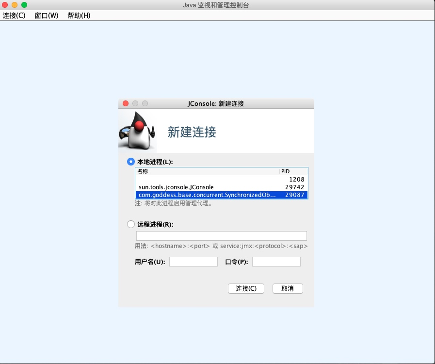</figure><br/>
<figure></figure><br/>
<figure>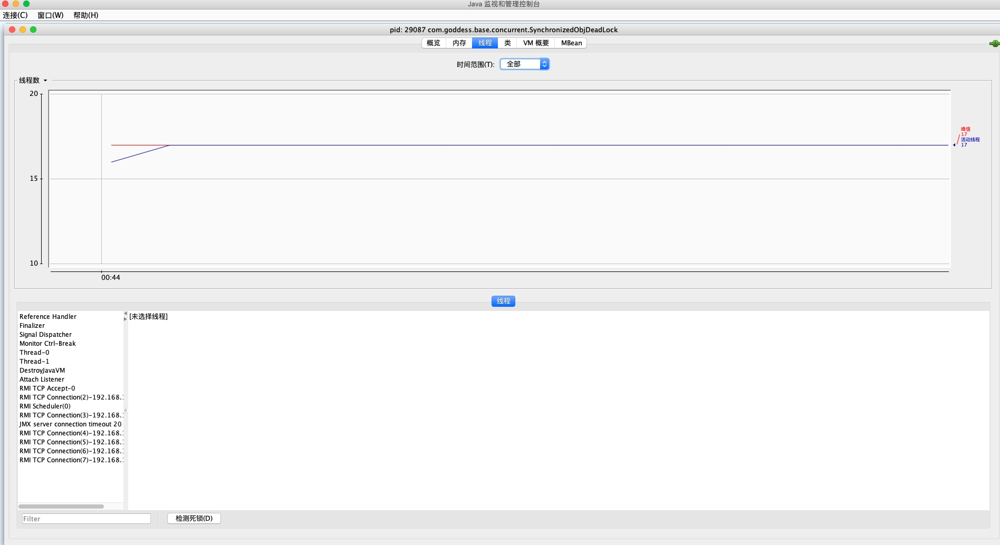</figure><br/>
<figure>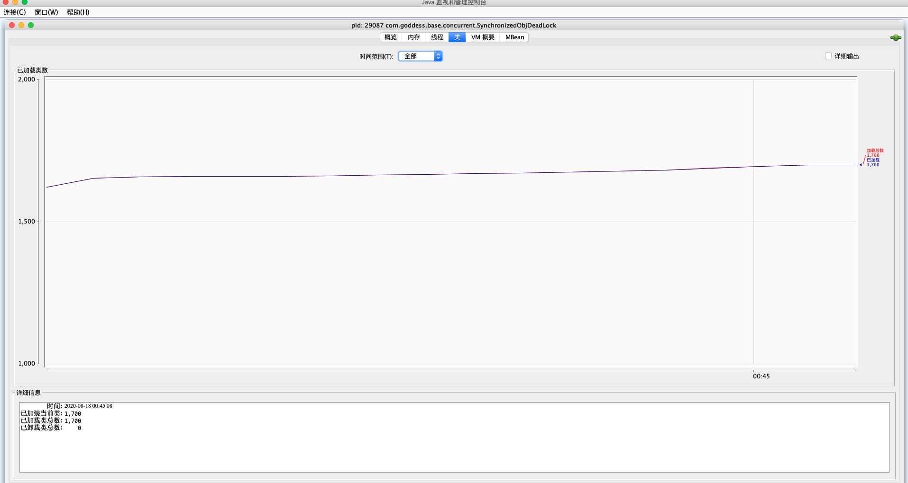</figure><br/>
<figure>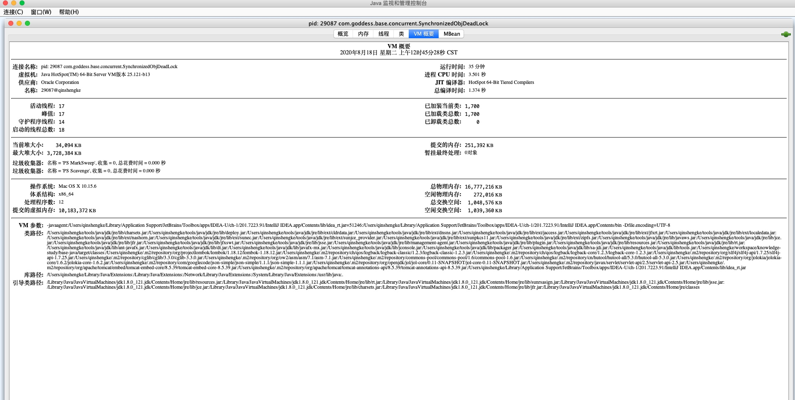</figure></p>

<h3 id="toc_20">visualvm</h3>

<p><figure>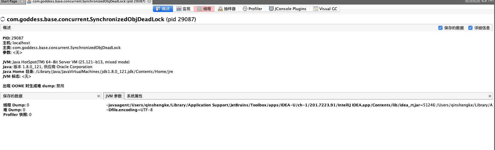</figure></p>

<p><figure>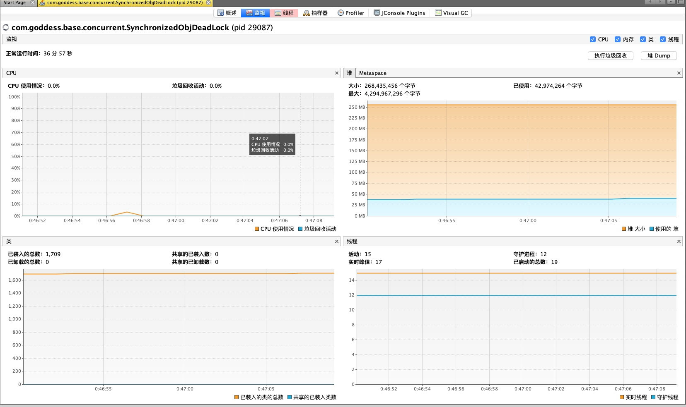</figure></p>

<p><figure>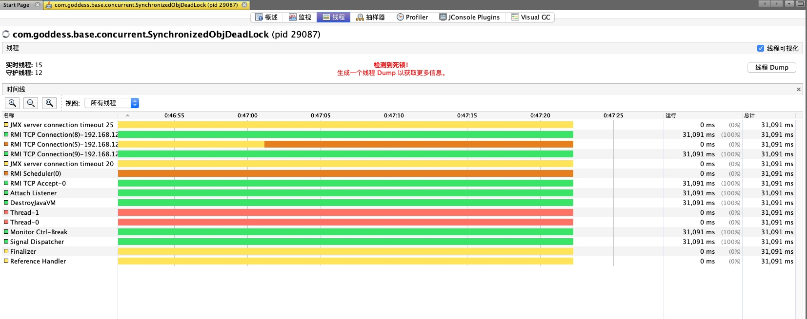</figure></p>

<p><figure>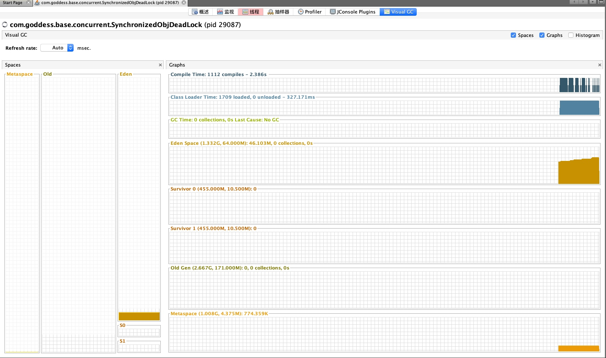</figure></p>

<h2 id="toc_21">Arthas</h2>

<p>Arthas 是 Alibaba 开源的 Java 诊断工具,在线排查问题，无需重启；动态跟踪Java代码；实时监控JVM状态。</p>

<p><a href="https://alibaba.github.io/arthas/">官方文档参考</a><br/>
<a href="https://arthas.aliyun.com/doc/quick-start.html">快速入门</a></p>

<h3 id="toc_22">下载和安装</h3>

<p>不需要安装，就是一个 jar 包</p>

<pre><code class="language-text">curl -O https://alibaba.github.io/arthas/arthas-boot.jar 

java -jar arthas-boot.jar
</code></pre>

<p>启动 arthas 的 jar 包是 arthas-boot.jar</p>

<p>直接 java -jar arthas-boot.jar。选择 attach 的进程绑定<br/>
<figure>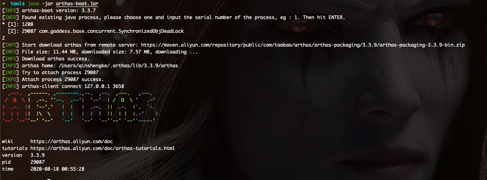</figure></p>

<p>输入help查看 arthas 支持的命令</p>

<pre><code class="language-text">[arthas@29087]$ help
 NAME         DESCRIPTION
 help         Display Arthas Help
 keymap       Display all the available keymap for the specified connection.
 sc           Search all the classes loaded by JVM
 sm           Search the method of classes loaded by JVM
 classloader  Show classloader info
 jad          Decompile class
 getstatic    Show the static field of a class
 monitor      Monitor method execution statistics, e.g. total/success/failure count, average rt, fail rate, etc.
 stack        Display the stack trace for the specified class and method
 thread       Display thread info, thread stack
 trace        Trace the execution time of specified method invocation.
 watch        Display the input/output parameter, return object, and thrown exception of specified method invocation
 tt           Time Tunnel
 jvm          Display the target JVM information
 perfcounter  Display the perf counter infornation.
 ognl         Execute ognl expression.
 mc           Memory compiler, compiles java files into bytecode and class files in memory.
 redefine     Redefine classes. @see Instrumentation#redefineClasses(ClassDefinition...)
 dashboard    Overview of target jvm&#39;s thread, memory, gc, vm, tomcat info.
 dump         Dump class byte array from JVM
 heapdump     Heap dump
 options      View and change various Arthas options
 cls          Clear the screen
 reset        Reset all the enhanced classes
 version      Display Arthas version
 session      Display current session information
 sysprop      Display, and change the system properties.
 sysenv       Display the system env.
 vmoption     Display, and update the vm diagnostic options.
 logger       Print logger info, and update the logger level
 history      Display command history
 cat          Concatenate and print files
 echo         write arguments to the standard output
 pwd          Return working directory name
 mbean        Display the mbean information
 grep         grep command for pipes.
 tee          tee command for pipes.
 profiler     Async Profiler. https://github.com/jvm-profiling-tools/async-profiler
 stop         Stop/Shutdown Arthas server and exit the console.
</code></pre>

<h3 id="toc_23">dashboard</h3>

<p><figure>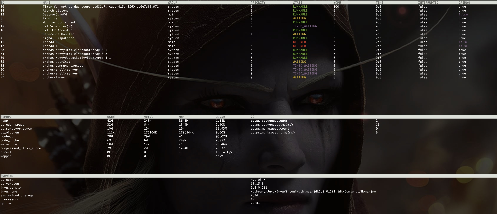</figure></p>

<h3 id="toc_24">thread</h3>

<p>这个命令和 jstack 很相似，但是功能更加强大，主要是查看当前 JVM 的线程堆栈信息 同时可以结合使用 thread –b 来进行死锁的排查死锁。<br/>
参数解释:</p>

<pre><code class="language-text">-n 指定最忙的前 n 个线程并打印堆栈
-b 找出阻塞当前线程的线程
-i 指定 cpu 占比统计的采样间隔，单位为毫秒
</code></pre>

<pre><code class="language-text">[arthas@29087]$ thread -b
&quot;Thread-0&quot; Id=11 BLOCKED on java.lang.Object@602bace6 owned by &quot;Thread-1&quot; Id=12
    at com.goddess.base.concurrent.SynchronizedObjDeadLock.lambda$deadLock$0(SynchronizedObjDeadLock.java:27)
    -  blocked on java.lang.Object@602bace6
    -  locked java.lang.Object@12487489 &lt;---- but blocks 1 other threads!
    at com.goddess.base.concurrent.SynchronizedObjDeadLock$$Lambda$1/122883338.run(Unknown Source)
    at java.lang.Thread.run(Thread.java:745)
</code></pre>

<p>thread -i 1000 -n 3 每过 1000 毫秒进行采样，显示最占 CPU 时间的前 3 个线程</p>

<p>thread --state WAITING 查看处于等待状态的线程</p>

<h3 id="toc_25">jvm</h3>

<p>查看jvm信息<br/>
<figure>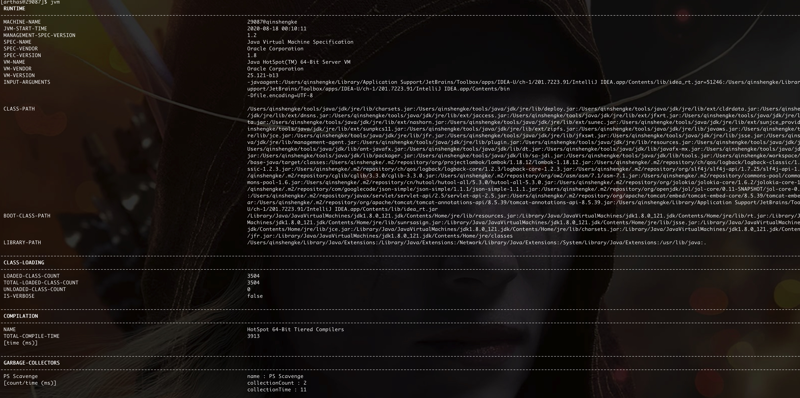</figure></p>

<h3 id="toc_26">jad 反编译指定已加载类的源码</h3>

<p><figure></figure></p>

<h3 id="toc_27">trace</h3>

<p>使用 trace 命令可以跟踪统计方法耗时。</p>

<p>例如：trace com.goddess.base.controller.UserController get</p>

<h3 id="toc_28">monitor</h3>

<p>每 5 秒统计一次 com.goddess.base.controller.UserController 类的 get 方法执行情况</p>

<p>monitor -c 5 com.goddess.base.controller.UserController get</p>

<h3 id="toc_29">watch</h3>

<p>让你能方便的观察到指定方法的调用情况。能观察到的范围为：返回值、抛出异常、入参，通过编写 OGNL 表达式进行对应变量的查看。</p>

                  </article>
                  <div class="comments-wrap">
                    <div class="share-comments">
                      

                      

                      
                    </div>
                  </div><!-- end comments wrap -->
              </div>
            </div><!-- end columns -->
      </div><!-- end container -->
    </section>


    <footer class="footer">
        <div class="content has-text-centered">
          <p>
              Copyright &copy; 2019
              Powered by <a target="_blank" href="http://www.mweb.im">MWeb</a>,&nbsp; 
              Theme used <a target="_blank" href="https://bulma.io/">Bulma CSS</a>.
          </p>
        </div>
      </footer>


  


<script src="asset/prism.js"></script>


  
    


  </body>
</html>
